| Model | Fitted Values | Frequentist Example | Bayesian Example | Stan model file | Description |
| Mean-only 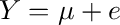 |
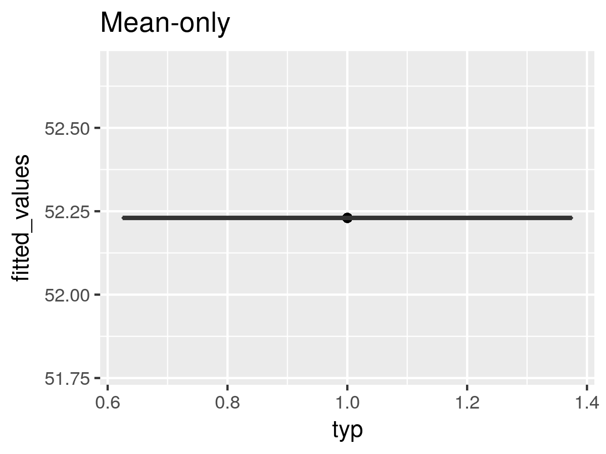 | R code | R code | normal.stan | Mean only |
| Simple regression 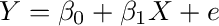 |
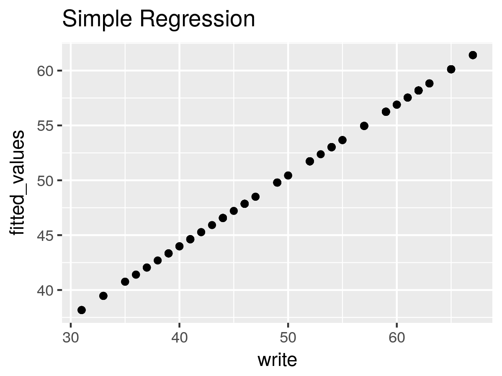 | R code | R code | simple_regression.stan | Simple regression |
| One-way ANOVA 3 levels 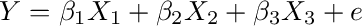 |
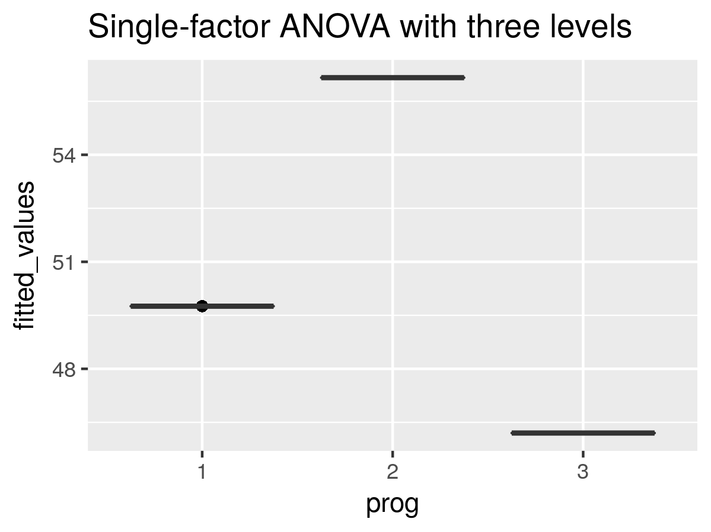 | R code | R code | one_way_anova.stan | One-way ANOVA |
| Two-way ANOVA no interaction 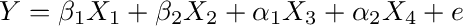 |
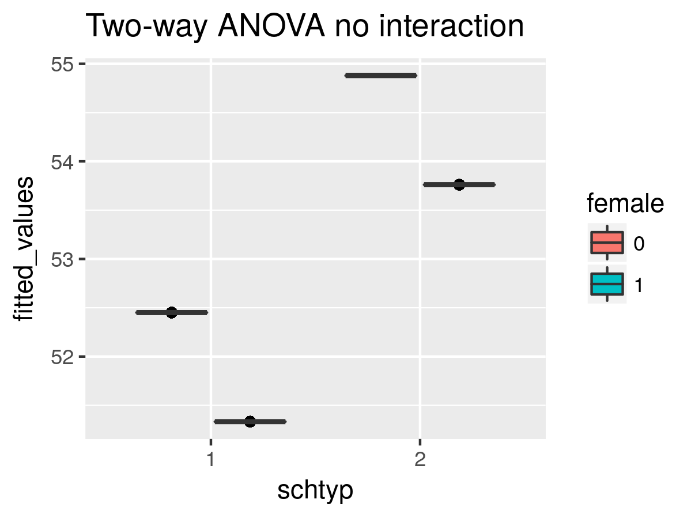 | R code | R code | two_factor_anova_without_interaction_general.stan | Two-way no interaction |
| Two-way ANOVA with interaction 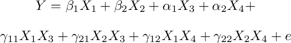 |
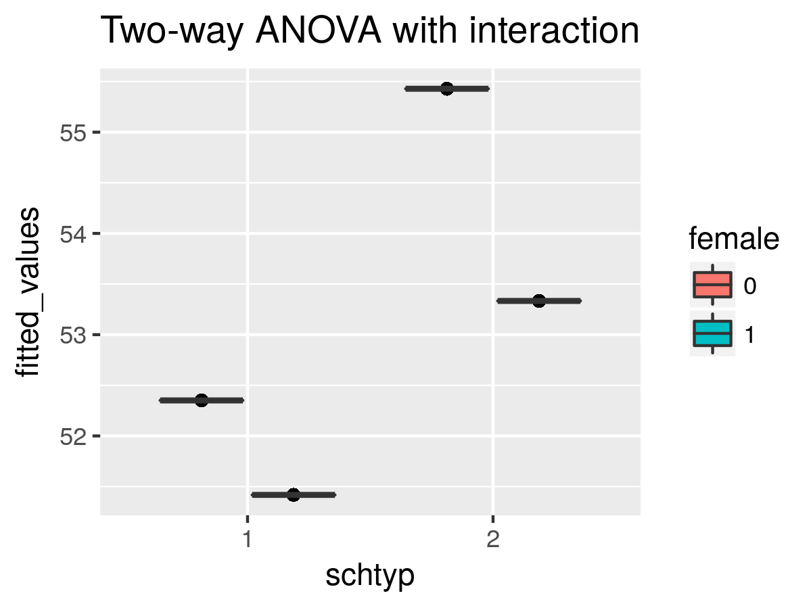 | R code | R code | two_factor_anova_with_interaction.stan | two-way with interaction |
| Covariance - common slope 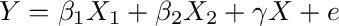 |
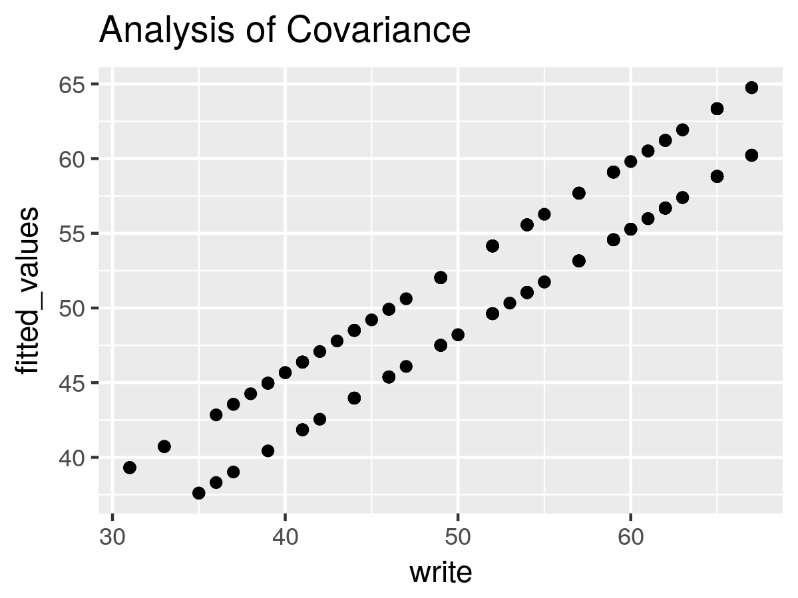 | R code | R code | two_factor_anova_with_interaction.stan | covariance - equal slopes |
| Covariance - unequal slopes 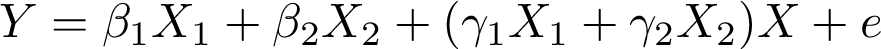 |
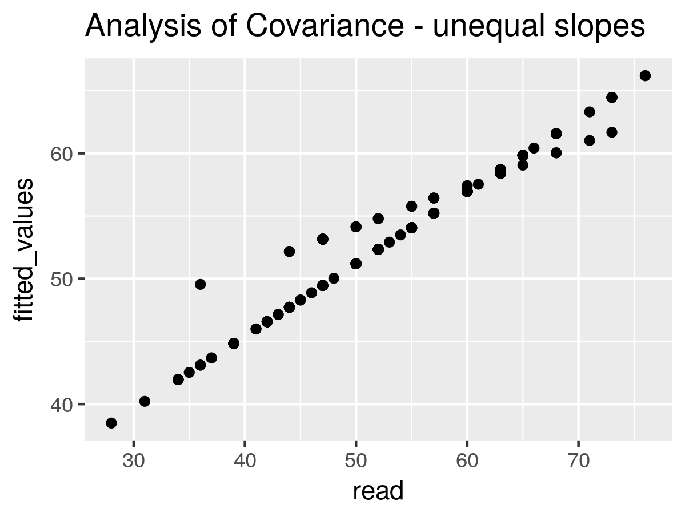 | R code | R code | two_factor_anova_with_interaction.stan | covariance - unequal slopes |